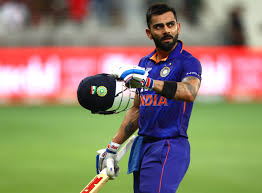
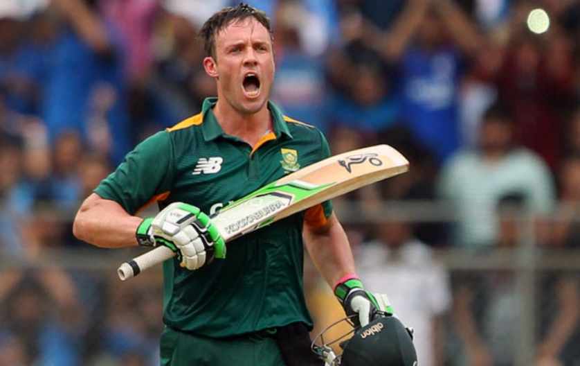

Lionel Messi
DOB : 24 June 1987
Lionel Messi is an Argentine footballer who plays for french club Paris Saint-Germain. He wears #10 for Argentina and #30 for PSG.
Career Stats :-

MS Dhoni
DOB : 7 July 1981
MS Dhoni is former Indian cricketer who played as wicket-keeper batsman. Currently he plays only for Chennai Super Kings.
Career Stats :-

Virat Kohli
DOB : 5 November 1988
Virat Kohli is Indian cricketer who plays as a batsman.
Career Stats

AB de Villiers
DOB : 17 February 1984
AB de Villiers is former South African cricketer who played as a batsman.
Career Stats

Robert Lewandowski
DOB : 21 August 1988
Robert Lewandowski is a Polish footballer who plays for spanish club Barcelona. He wears #9 for Barcelona and Poland.
Career Stats :-